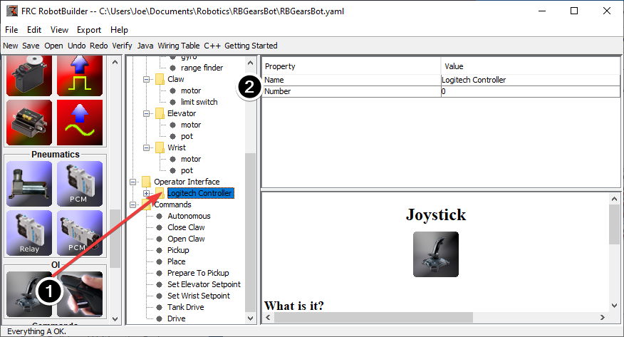

Connecting the Operator Interface to a Command
Commands handle the behaviors for your robot. The command starts a subsystem to some operating mode like raising and elevator and continues running until it reaches some setpoint or timeout. The command then handles waiting for the subsystem to finish. That way commands can run in sequence to develop more complex behaviors.
RobotBuilder will also generate code to schedule a command to run whenever a button on your operator interface is pressed. You can also write code to run a command when a particular trigger condition has happened.
Adding the Joystick to the Robot Program
Add the joystick to the robot program
Drag the joystick to the Operator Interface folder in the robot program
Name the joystick so that it reflects the use of the joystick and set the USB port number